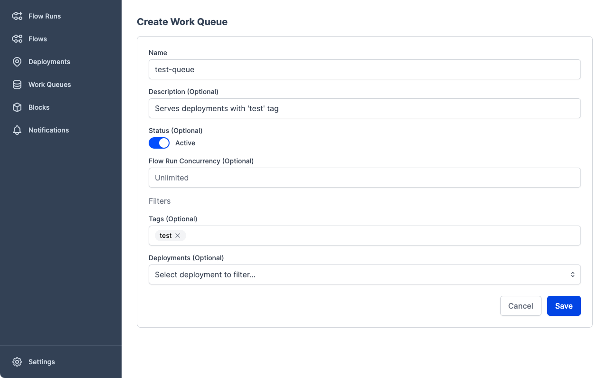
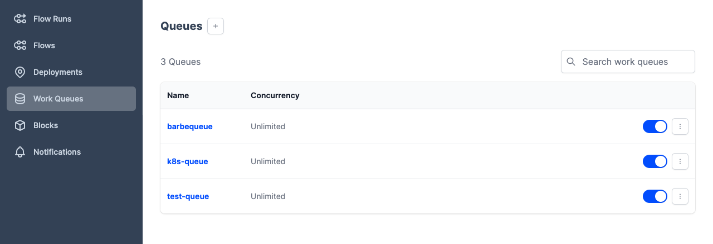

Agents and Work Queues¶
Agents and work queues bridge the Prefect Orion orchestration environment with a user’s execution environment. When a deployment creates a flow run, it is submitted to a specific work queue for scheduling. Agents running in the execution environment poll their respective work queues for new runs to execute.
Work queues are automatically created whenever they are referenced by either a deployment or an agent. For most applications, this automatic behavior will be enough and users will not have to manually configure their work queues at all. However, advanced users will find that work queues enable a greater degree of control over work delivery.
To run orchestrated deployments, you must configure at least one agent (and its associated work queue):
- Start an agent
- Configure a work queue (optional)
Agent role has changed from Prefect 1
Work queues are a new concept. The role of agents has changed from their implementation in Prefect 1. If you're familiar with that model, please take some time to understand the new work queue/agent model. It requires a little more setup, but offers much greater control and flexibility with how deployments are executed.
Key changes:
- Work queues contain all the logic about what flows run and how. Agents just pick up work from queues and execute the flows.
- There is no global agent that picks up orchestrated work by default. You must configure an agent with a specific work queue.
Agent overview¶
Agent processes are lightweight polling services that get scheduled work from a work queue and deploy the corresponding flow runs.
It is possible for multiple agent processes to be started for a single work queue, or for one agent to pull work from multiple work queues. Each agent process sends a unique ID to the server to help disambiguate themselves and let users know how many agents are active.
Agent options¶
Agents are configured to pull work from one or more work queues. If the agent references a work queue that doesn't exist, it will be created automatically.
Configuration parameters you can specify when starting an agent include:
| Option | Description |
|---|---|
| -q, --work-queue | One or more work queues that the agent will poll for work. |
| --api TEXT | The API URL for the Prefect Orion server. Default is the value of PREFECT_API_URL. |
| --run-once | Only run agent polling once. By default, the agent runs forever. |
| --prefetch-seconds | The amount of time before a flow run's scheduled start time to begin submission. Default is the value of PREFECT_AGENT_PREFETCH_SECONDS. |
| --hide-welcome | Do not display the startup ASCII art for the agent process. |
| --match QUEUE_PREFIX | Polls for queues matching the given QUEUE_PREFIX. Note: this option overrides anything passed with -q or --work-queue. |
You must start an agent within an environment that can access or create the infrastructure needed to execute flow runs. Your agent will deploy flow runs to the infrastructure specified by the deployment.
Prefect must be installed in execution environments
Prefect must be installed in any environment in which you intend to run the agent or execute a flow run.
PREFECT_API_URL setting for agents
PREFECT_API_URL must be set for the environment in which your agent is running or specified when starting the agent with the --api flag.
If you want an agent to communicate with Prefect Cloud or a Prefect Orion API server from a remote execution environment such as a VM or Docker container, you must configure PREFECT_API_URL in that environment.
Starting an agent¶
Use the prefect agent start CLI command to start an agent. You must pass at least one work queue name or match string that the agent will poll for work. If the work queue does not exist, it will be created.
$ prefect agent start -q [work queue name]
For example:
$ prefect agent start -q "my-queue"
Starting agent with ephemeral API...
___ ___ ___ ___ ___ ___ _____ _ ___ ___ _ _ _____
| _ \ _ \ __| __| __/ __|_ _| /_\ / __| __| \| |_ _|
| _/ / _|| _|| _| (__ | | / _ \ (_ | _|| .` | | |
|_| |_|_\___|_| |___\___| |_| /_/ \_\___|___|_|\_| |_|
Agent started! Looking for work from queue(s): my-queue...
08:31:57.197 | INFO | prefect.agent - Created work queue 'my-queue'.
In this case, Prefect automatically created a new my-queue work queue.
By default, the agent polls the API specified by the PREFECT_API_URL environment variable. To configure the agent to poll from a different server location, use the --api flag, specifying the URL of the server.
In addition, agents can match multiple work queues by providing a --match string instead of specifying all of the work queues. The agent will poll every work queue with a name that starts with the given string. New queues matching this prefix will be found by the agent without needing to restart it.
For example:
$ prefect agent start --match "foo-"
This example will poll every work queue that starts with "foo-".
Configuring prefetch¶
By default, the agent begins submission of flow runs a short time (10 seconds) before they are scheduled to run. This allows time for the infrastructure to be created, so the flow run can start on time. In some cases, infrastructure will take longer than this to actually start the flow run. In these cases, the prefetch can be increased using the --prefetch-seconds option or the PREFECT_AGENT_PREFETCH_SECONDS setting. Submission can begin an arbitrary amount of time before the flow run is scheduled to start. If this value is larger than the amount of time it takes for the infrastructure to start, the flow run will wait until its scheduled start time. This allows flow runs to start exactly on time.
Work queue overview¶
Work queues organize work that agents pick up for execution. Deployments and agents coordinate through a shared work queue name.
Work queues are like pub/sub topics
It's helpful to think of work queues as a way to coordinate (potentially many) deployments with (potentially many) agents through a known channel: the queue itself. This is similar to how "topics" are used to connect producers and consumers in a pub/sub or message-based system. By switching a deployment's work queue, users can quickly change the agent that will execute their runs, making it easy to promote runs through environments or even debug locally.
In addition, users can control aspects of work queue behavior like how many runs the queue allows to be run concurrently or pausing delivery entirely. These options can be modified at any time, and any agent processes requesting work for a specific queue will only see matching flow runs.
Work queue affinity improved starting from Prefect 2.1.0
Until Prefect 2.1.0, tags were used to associate flow runs with work queues. Given the flexibility of tags, it wasn't always clear which runs would be picked up by which work queues. Starting in Prefect 2.1.0, tag-based work queues are deprecated. Instead, work queue names are used to explicitly direct flow runs from deployments into queues.
Note that backward compatibility is maintained and work queues that use tag-based matching can still be created and will continue to work. However, those work queues are now considered legacy and we encourage you to use the new behavior by specifying work queues explicitly on agents and deployments.
Work queue configuration¶
Advanced topic
Work queues do not require manual creation or configuration, because Prefect will automatically create them whenever needed. Managing work queues can be considered an advanced way to get more control over how runs are executed.
You can configure work queues by using:
- Prefect UI Work Queues page
- Prefect CLI commands
- Prefect Python API

To configure a work queue via the Prefect CLI, use the prefect work-queue create command:
prefect work-queue create [OPTIONS] NAME
NAME is a required, unique name for the work queue.
Optional configuration parameters you can specify to filter work on the queue include:
| Option | Description |
|---|---|
| -l, --limit | The concurrency limit to set on the queue. |
For example, to create a work queue called test-queue, you would run this command:
$ prefect work-queue create test-queue
Created work queue with properties:
name - 'test-queue'
id - a51adf8c-58bb-4949-abe6-1b87af46eabd
concurrency limit - None
Start an agent to pick up flows from the work queue:
prefect agent start -q 'test-queue'
Inspect the work queue:
prefect work-queue inspect 'test-queue'
On success, the command returns the details of the newly created work queue, which can then be used to start agents that poll this queue for work or perform additional configuration of the queue.
Viewing work queues¶
At any time, users can see and edit configured work queues in the Prefect UI.

To view work queues with the Prefect CLI, you can:
- List (
ls) all available queues - Inspect (
inspect) the details of a single queue - Preview (
preview) scheduled work for a single queue
prefect work-queue ls lists all configured work queues for the server.
$ prefect work-queue ls
prefect work-queue ls
Work Queues
┏━━━━━━━━━━━━┳━━━━━━━━━━━━━━━━━━━━━━━━━━━━━━━━━━━━━━┳━━━━━━━━━━━━━━━━━━━┓
┃ Name ┃ ID ┃ Concurrency Limit ┃
┡━━━━━━━━━━━━╇━━━━━━━━━━━━━━━━━━━━━━━━━━━━━━━━━━━━━━╇━━━━━━━━━━━━━━━━━━━┩
│ barbeque │ 72c0a101-b3e2-4448-b5f8-a8c5184abd17 │ None │
│ k8s-queue │ 7b6e3523-d35b-4882-84a7-7a107325bb3f │ None │
│ test-queue │ a51adf8c-58bb-4949-abe6-1b87af46eabd │ None │
└────────────┴──────────────────────────────────────┴───────────────────┘
(**) denotes a paused queue
```
</div>
`prefect work-queue inspect` provides all configuration metadata for a specific work queue by ID.
<div class="terminal">
```bash
$ prefect work-queue inspect 'test-queue'
WorkQueue(
id='a51adf8c-58bb-4949-abe6-1b87af46eabd',
created='2 minutes ago',
updated='2 minutes ago',
name='test-queue',
filter=None,
)
prefect work-queue preview displays scheduled flow runs for a specific work queue by ID for the upcoming hour. The optional --hours flag lets you specify the number of hours to look ahead.
$ prefect work-queue preview 'test-queue' --hours 12
┏━━━━━━━━━━━━━━━━━┳━━━━━━━━━━━━━━━━━━━━━━━━━━━━┳━━━━━━━━━━━━━━┳━━━━━━━━━━━━━━━━━━━━━━━━━━━━━┓
┃ Scheduled Star… ┃ Run ID ┃ Name ┃ Deployment ID ┃
┡━━━━━━━━━━━━━━━━━╇━━━━━━━━━━━━━━━━━━━━━━━━━━━━╇━━━━━━━━━━━━━━╇━━━━━━━━━━━━━━━━━━━━━━━━━━━━━┩
│ 2022-02-26 06:… │ 741483d4-dc90-4913-b88d-0… │ messy-petrel │ 156edead-fe6a-4783-a618-21… │
│ 2022-02-26 05:… │ 14e23a19-a51b-4833-9322-5… │ unselfish-g… │ 156edead-fe6a-4783-a618-21… │
│ 2022-02-26 04:… │ deb44d4d-5fa2-4f70-a370-e… │ solid-ostri… │ 156edead-fe6a-4783-a618-21… │
│ 2022-02-26 03:… │ 07374b5c-121f-4c8d-9105-b… │ sophisticat… │ 156edead-fe6a-4783-a618-21… │
│ 2022-02-26 02:… │ 545bc975-b694-4ece-9def-8… │ gorgeous-mo… │ 156edead-fe6a-4783-a618-21… │
│ 2022-02-26 01:… │ 704f2d67-9dfa-4fb8-9784-4… │ sassy-hedge… │ 156edead-fe6a-4783-a618-21… │
│ 2022-02-26 00:… │ 691312f0-d142-4218-b617-a… │ sincere-moo… │ 156edead-fe6a-4783-a618-21… │
│ 2022-02-25 23:… │ 7cb3ff96-606b-4d8c-8a33-4… │ curious-cat… │ 156edead-fe6a-4783-a618-21… │
│ 2022-02-25 22:… │ 3ea559fe-cb34-43b0-8090-1… │ primitive-f… │ 156edead-fe6a-4783-a618-21… │
│ 2022-02-25 21:… │ 96212e80-426d-4bf4-9c49-e… │ phenomenal-… │ 156edead-fe6a-4783-a618-21… │
└─────────────────┴────────────────────────────┴──────────────┴─────────────────────────────┘
(**) denotes a late run
Pausing and deleting work queues¶
A work queue can be paused at any time to stop the delivery of work to agents. Agents will not receive any work when polling a paused queue.
To pause a work queue through the Prefect CLI, use the prefect work-queue pause command:
$ prefect work-queue pause 'test-queue'
Paused work queue 'test-queue'
To resume a work queue through the Prefect CLI, use the prefect work-queue resume command with the work queue name.
To delete a work queue through the Prefect CLI, use the prefect work-queue delete command with the work queue name.
Work queue concurrency¶
Each work queue can optionally restrict concurrent runs of matching flows.
For example, a work queue with a concurrency limit of 5 will only release new work if fewer than 5 matching runs are currently in a Running or Pending state. If 3 runs are Running or Pending, polling the queue for work will only result in 2 new runs, even if there are many more available, to ensure that the concurrency limit is not exceeded.
When using the prefect work-queue Prefect CLI command to configure a work queue, the following subcommands set concurrency limits:
set-concurrency-limitsets a concurrency limit on a work queue.clear-concurrency-limitclears any concurrency limits from a work queue.
Priority queues¶
Work queues can be used to more precisely control the delivery of work to agents. For example, an agent could be started with two work queues, one for high-priority work and one for lower-priority work: prefect agent start -q high-priority -q low-priority. In the UI, the low-priority queue could be configured with a low concurrency limit to ensure that its runs don't "crowd out" the high-priority ones.
Local debugging¶
As long as your deployment's infrastructure block supports it, you can use work queues to temporarily send runs to an agent running on your local machine for debugging by running prefect agent start -q my-local-machine and updating the deployment's work queue to my-local-machine.